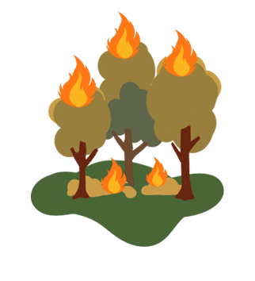
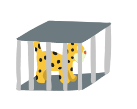
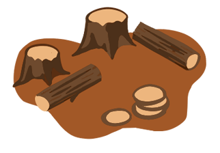
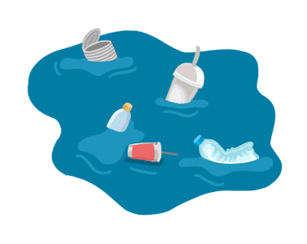
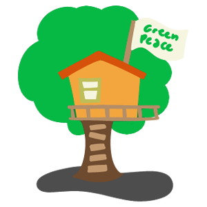

Onca-Pintada
/s.glbimg.com/jo/g1/f/original/2019/01/14/img_7549_felino_aJjLrq4.jpg)
Falar em mata atlântica sem citar a onça-pintada é o mesmo que ir à praia e não ver o mar. Na Amazônia elas existem em menor quantidade que no Pantanal, devido à dificuldade de encontrar alimento por ali. Suas presas mais comuns são os animais jovens, idosos e doentes. As onças gostam de caçadas fáceis.
harpia

Com aproximadamente dois metros de envergadura de asas abertas e com garras do mesmo tamanho das de um urso-pardo, a harpia, também conhecida como gavião-real, é considerada a ave de rapina mais poderosa do mundo. Mesmo com esse tamanho todo, ela voa de maneira tranquila e habilidosa entre as árvores da floresta.
Tucano

Os tucanos alimentam-se principalmente de frutas, mas também podem comer insetos, cobras, rãs e lagartos. Muitas vezes eles invadem os ninhos de pássaros canoros e comem seus ovos ou até mesmo seus filhotes. Para se alimentar, o tucano pega a comida com a ponta do bico e joga a cabeça para trás, mandando o alimento para a garganta.
Anta

O maior mamífero da América do Sul pode ser encontrado em todo país, embora esteja quase extinta na Caatinga. A anta é uma excelente nadadora e mergulha rapidamente quando se sente ameaçada. Na Amazônia, ela visita saleiros naturais para conseguir os alimentos que não obtém em sua dieta de folhas e frutos.
Jacaretinga

Quando pequenos estes jacarés alimentam-se de insetos, sapos e outros animais menores, mas na vida adulta costumam comer peixe. Para caçar seu alimento, eles agem de forma bastante preguiçosa: eles abrem a boca contra a correnteza e esperam que algum peixe simplesmente caia na armadilha.
Pirarucu

O pirarucu (Arapaima gigas) é um dos maiores peixes de água doce do planeta. Nativo da Amazônia, ele promove benefícios para o ecossistema e comunidades que vivem da pesca. Seu nome vem de dois termos indígenas pira, “peixe”, e urucum, “vermelho”, devido à cor de sua cauda. Por ser um peixe de grandes dimensões.
Boto

Parte do folclore brasileiro, os botos são conhecidos por seu comportamento brincalhão, semelhante ao dos golfinhos. Eles se alimentam de peixes, lulas e crustáceos que conseguem engolir sem mastigar. Estes animais são ameaçados pois as pessoas acreditam que quem possui um olho deles arranja namorado mais rápido.
Peixe boi

Os peixes-bois são mamíferos aquáticos da ordem dos sirênios. O nome foi escolhido por causa do canto desses animais, que fez com que navegadores o associassem às mitológicas sereias. Existem quatro espécies de peixe-boi no mundo, e uma delas vive apenas em água doce, aqui no Brasil, mais especificamente na Amazônia.